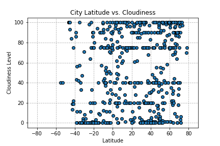
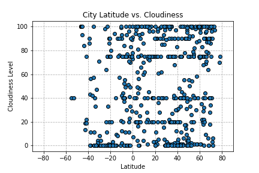

The purpose of this project to show how weather can change as relates to the Latitude of the Earth. The data was collected by pulling weather patterns for over 500 cities from the OpenWeathermap API.
After collecting the data, Matplotlib was used to create various plots show the relationship between the weather and the latitude. It was chosen to look at how temperature, cloudiness, wind speed, and humidity all relate to the latitude. This website gives an analysis, including explanations and descriptions of any trends that may have occurred. The data used for this project is also provided!
Visualizations Preview
 
